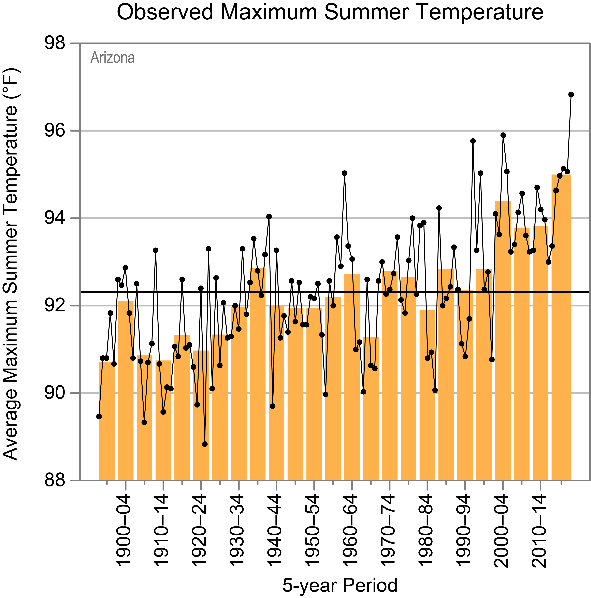
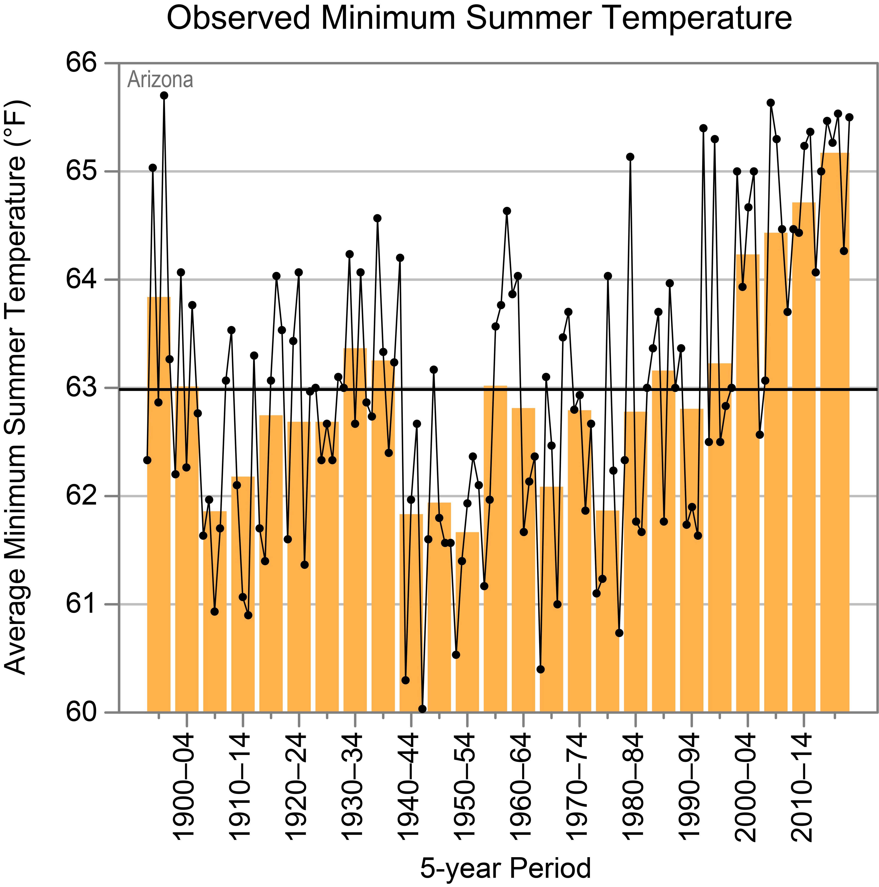

D1 · Story Frame
Claim:Its nights. From 1966 to 1975 and 2016 to 2025, Phoenix's average daily low rose 8 fahrenheit, while the average daily high rose 3.2 fahrenheit. The nights warmed more than double the days.
Year to year, the averages of each fall and rise. However over six decades the low has began to climb faster. With each reaching hteir highest values in this 60 year record during 2024. 90 fahrenheit for the average high and 66.6 fahrenheit for the average low. In 1966, the average high was 30.3 fahrenheit warmer than the average low. And by 2025, the gap was 23.3 fahrenheit.
Methods and sources: NOAA NCEI Climate Data Online, Global Summary of the Year, station PHOENIX AIRPORT, AZ US (GHCND:USW00023183), 1966–2025, The average daily high, and average daily low are NOAA's yearly averages. The yearly values were averaged into six 10-year
D2 · Editorial Figures


D3 · Accessible Data Table
| Period | Average daily high (°F) | Average daily low (°F) | Gap, high minus low (°F) | Days at or above 90°F (per year) |
|---|---|---|---|---|
| 1966–1975 | 85.4 | 57.1 | 28.3 | 165.9 |
| 1976–1985 | 86.2 | 61.6 | 24.6 | 165.5 |
| 1986–1995 | 87.0 | 63.2 | 23.8 | 176.5 |
| 1996–2005 | 86.6 | 63.4 | 23.2 | 172.8 |
| 2006–2015 | 87.6 | 64.3 | 23.3 | 175.2 |
| 2016–2025 | 88.6 | 65.1 | 23.5 | 180.7 |
| Change, first to last period | +3.2 | +8.0 | −4.8 | +14.8 |
Source: NOAA NCEI Climate Data Online, Global Summary of the Year, station PHOENIX AIRPORT, AZ US (GHCND:USW00023183). The values are all the average of 10 yearly values. use rounded averages shown.
D4 · Responsive SVG
D5-D6 · System and Documentation
this page has brought the Module 1 selective reset, color and spacing tokens, and the typefaces.
Sources: NOAA NCEI, Climate Data Online: Global Summary of the Year, PHOENIX AIRPORT, AZ US (GHCND:USW00023183), 1966-2025, accessed October 7, 2026. NOAA NCEI, GSOM/GSOY Dataset Description Document, version 1.0.1, 2017. Frankson, R., K.E. Kunkel, L.E. Stevens, D.R. Easterling, T. Brown, N. Selover, and E. Saffell, Arizona State Climate Summary 2022, NOAA Technical Report NESDIS 150-AZ, NOAA/NESDIS, 2022 (Figures 1 and 2).
Transformations: Yearly values were averaged into six 10-year periods and rounded to the first decimal. The D4 bars use 75 SVG units per farenheit.
Credits and licenses: Figures 1 and 2 are from the Arizona State Climate Summary 2022, The D4 data comes from NOAA Climate Data Online, a U.S. government, not under copyright. Source Sans 3 is by Adobe, it is under the SIL Open Font License 1.1 (fonts/OFL.txt).
Test record and AI disclosure: I have submitted these seperately along with the screenshots.